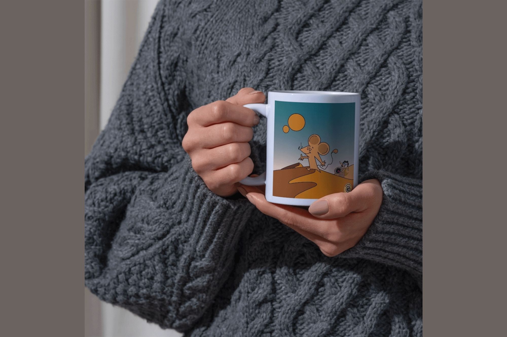
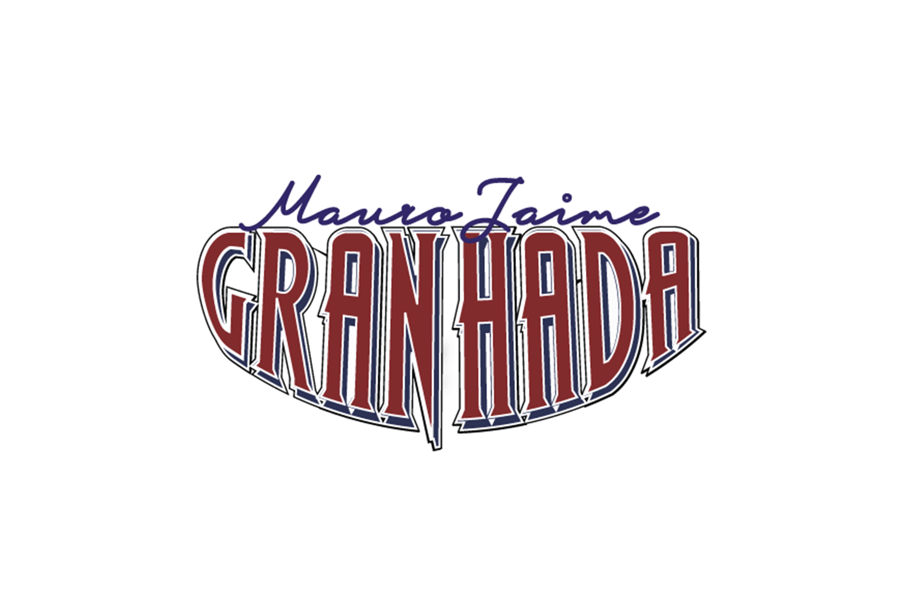
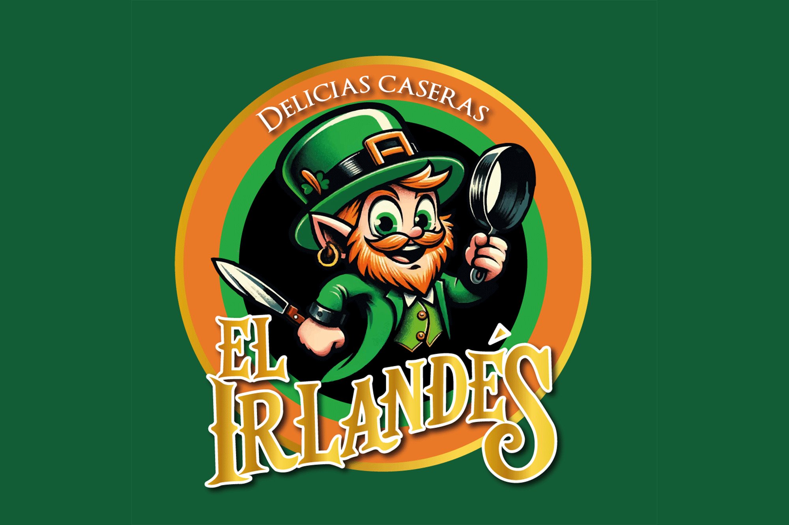
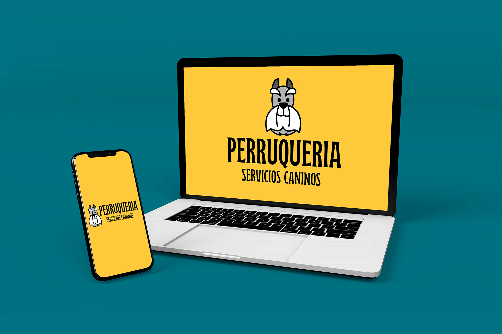
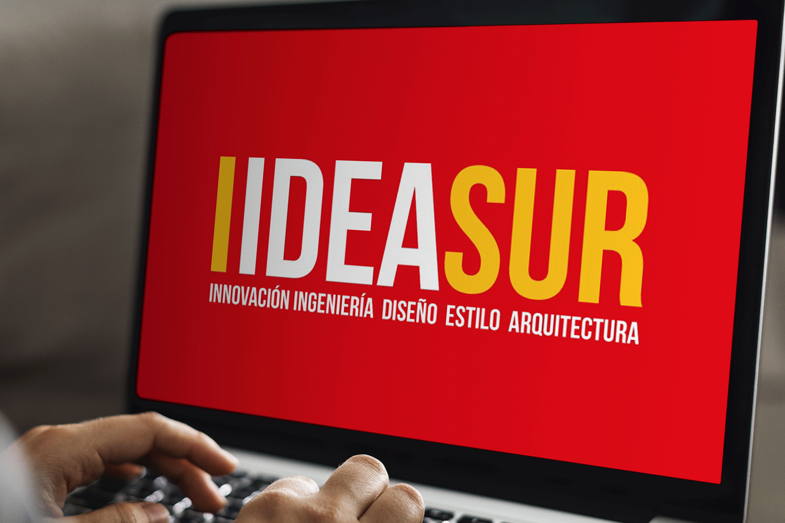
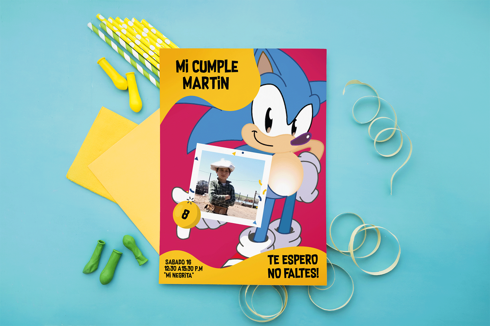

GRISSEL PROVENZZA

Grissel Provenzza es Licenciada en Diseño Gráfico y se desempeña actualmente como docente en la Escuela Técnica (UTU). Su trabajo se destaca especialmente en el área de ilustración, así como por su alto nivel de compromiso, responsabilidad y cumplimiento total de los proyectos asignados.
Actualmente se encuentra cursando los exámenes internacionales de idioma italiano, correspondientes al nivel B1, certificación que la habilita para desempeñarse como docente en centros educativos.

TRABAJO DE TARJETERÍA
Estética femenina
La clienta pidió una tarjetería simple, con logotipo, dirección y ubicación del local, sin perder la esencia de la marca con su Logotipo elegante.

TRABAJOS PERSONALIZADOS
merchandising
Si querés una pieza única, que refleje la identidad y esencia de tu marca, este diseño es para vos donde cada detalle comunique quién sos.

DIVERSIDAD EN TECNICAS
Ilustración del principito
Es una ilustración artística de estilo infantil y poético, realizada con acuarelas y lápices de colores. El fondo presenta un paisaje onírico, con un cielo en tonos azules y violetas, un campo verde-amarillo y planetas o formas circulares de colores que evocan un mundo fantástico. Inspirado en el principito escrito en 1942 por Antoine de Saint-Exupéry y publicado por primera vez en 1943.

TRABAJO DE MARCA
LOGO
En la parte superior aparece el nombre “Mauro Jaime” escrito en una tipografía manuscrita y fluida, de color azul. Debajo, en mayor protagonismo, se lee “GRAN HADA” en letras mayúsculas, gruesas y estilizadas, de color rojo con contornos y sombras en azul y blanco, lo que le da un efecto tridimensional y dinámico. La composición general transmite una estética clásica y llamativa, con un aire artístico y teatral.

EL IRLANDES
Trabajo de marca
Es un logo circular y colorido que muestra un duende irlandés caricaturesco con utensilios de cocina. Predominan los tonos verde y naranja, y el texto “El Irlandés – Delicias caseras” transmite una identidad artesanal, amigable y gastronómica.

PERRUQUERIA
Servicios caninos
Es un mockup digital donde se muestra la identidad visual de “Perruquería – Servicios Caninos” aplicada en una notebook y un celular, con un diseño simple, moderno y llamativo, predominando el color amarillo y un ícono canino.

TRABAJO DE MARCA
Empresa IDEASUR
Diseño de identidad visual para la empresa IDESUR, destacando una imagen moderna y profesional. La propuesta combina una estética tecnológica y corporativa, transmitiendo innovación, confianza y compromiso con el diseño y la arquitectura.

INVITACIÓN DE CUMPLEAÑOS
Tarjetería
Diseño de invitación de cumpleaños con una propuesta colorida y dinámica. Se trabajó una composición alegre y llamativa, utilizando elementos gráficos que transmiten diversión, celebración y un estilo personalizado para una ocasión especial.